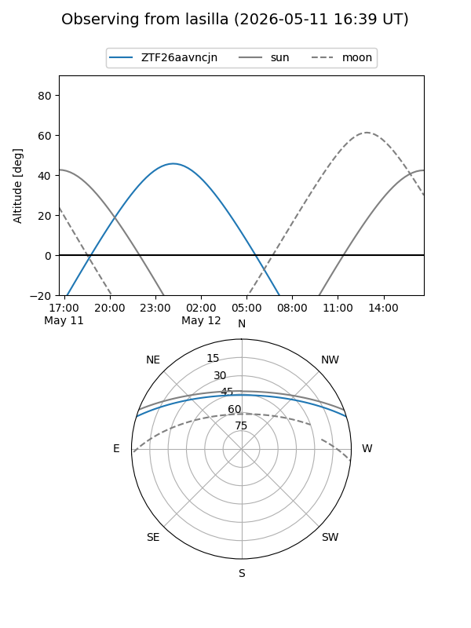
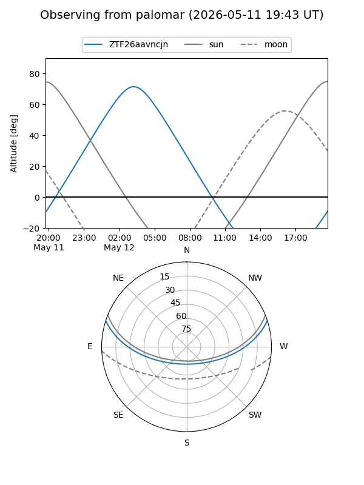

ZTF26aavncjn
Target ZTF26aavncjn at 2026-05-12 05:05
Aliases and brokers:
FINK: link
Lasair: link
ALeRCE: link
alt names
ZTF26aavncjn (ztf,fink_ztf)
Coordinates:
equatorial (ra, dec) = 161.2685,+15.06413
equatorial (HMS+DMS) = 10:45:04.43,+15:03:50.88
galactic (l, b) = (228.7963,+58.27245)
Flags:
Photometry:
last ztfg=19.94
2 ztfg detections
Lightcurve
Visibility


Additional plots